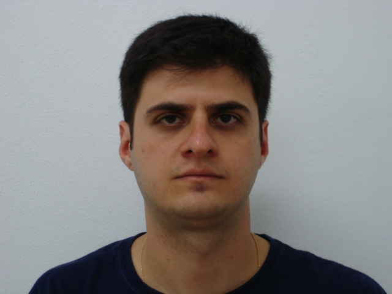
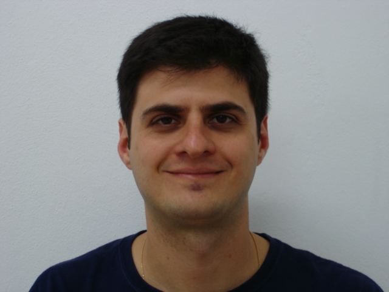
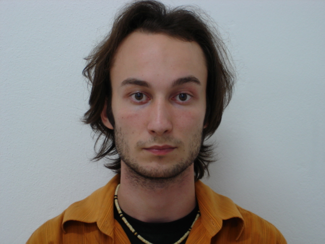
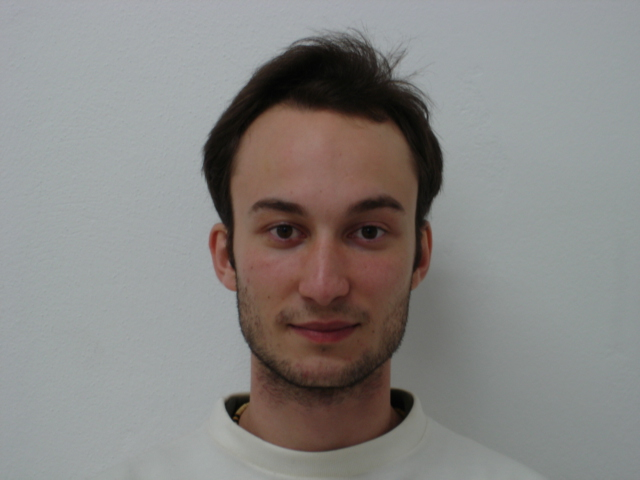

AuraFace 人臉辨識報告 Apache-2.0 可商用
出貨模型 AuraFace FP16（130MB, ResNet100, ArcFace 角margin loss）· 對齊 YuNet 5 點 · cosine 比對 · 2026-05-22
資料：FEI 200 人受控正面（≈正常前鏡頭品質）+ LFW 4,108 位名人（大規模撞臉）
一句話： 用可商用的 AuraFace，同一人（受控正面）100% 認得回（FRR 0%@0.40），
4,108 個不同人裡撞臉極少。embedding 只是一串數字（無照片）→ 能比「是否同一人」，無法反推「是誰」。
做法
對齊後的臉 112×112 → AuraFace（ResNet100 + ArcFace 角margin loss，用可商用資料訓練） → 512 維向量 → L2 正規化 → 兩臉比 cosine。
與 InsightFace 同演算法、同對齊，差別只在訓練資料（所以可商用、準度略低一階）。embedding 永遠用 cosine 比，不是固定 hash。
PART A — FEI 200 人受控正面（我們的真實場景）
FEI 正面 pose（中性/微笑），≈ 使用者乖乖對前鏡頭掃臉的品質。同人 1,128 組、不同人 19,900 組（全配對）。
| 門檻 | FRR 同人被拒 | FAR 撞臉(扣資料集標錯) |
|---|
| 0.35 | 0/1128 (0.00%) | 113/19900 (0.5678%) |
| 0.40 | 0/1128 (0.00%) | 29/19900 (0.1457%) |
| 0.45 | 2/1128 (0.18%) | 7/19900 (0.0352%) |
| 0.50 | 4/1128 (0.35%) | 1/19900 (0.0050%) |
門檻 0.40：同一人 100% 認得回（0% 被拒）；不同人撞臉極少。這就是真實使用情境（受控正面）的表現。
模型反過來抓出 FEI 自己標錯的人
所有不同人對裡，相似度最高的一對是 #2 ↔ #71，cosine 0.880（其餘不同人都低很多）。看圖就知道是同一個人，FEI 把同一人標成兩個編號。AuraFace 正確判定他們是同一人 —— 這正是唯一 ID 要的行為，也證明模型判別力健康。
同一人(正常)

#1
cosine
0.874
FEI 標成兩個人(其實同一人)

#2 ↔ #71
cosine
0.880
PART B — LFW 4,108 位名人（大規模撞臉）
真實名人照片，挑正面。同人 2,211 組、不同人 8,435,778 組全配對（非抽樣）。
| 配對數 | 平均 cosine | 極端值 |
|---|
| 同一人 | 2,211 | 0.595 | 最低 -0.011 |
| 不同人 | 8,435,778 | 0.063 | 最高 1.000（含資料集重複） |
| 門檻 | FAR 撞臉(扣資料集標錯) | FRR 同人被拒 |
|---|
| 0.35 | 1232 (+2 標錯)/8,435,778 (0.01460%) | 91/2,211 (4.12%) |
| 0.40 | 200 (+2 標錯)/8,435,778 (0.00237%) | 156/2,211 (7.06%) |
| 0.45 | 50 (+2 標錯)/8,435,778 (0.00059%) | 290/2,211 (13.12%) |
| 0.50 | 24 (+2 標錯)/8,435,778 (0.00028%) | 463/2,211 (20.94%) |
4,108 個不同人、8,435,778 組全配對，門檻 0.40 撞臉率僅 200/8,435,778。LFW 同人是不同年代野照（壓力測試），FRR 比受控正面(PART A)高屬正常。
LFW 最像的兩個「不同人」
Bart_Hendricks ↔ Ricky_Ray
cosine
1.000(cosine≈1.0 多為 LFW 重複照片/標錯)
隱私：知道同一人，不知道是誰
存的是 512 個數字（無照片）。✅ 能比「是不是同一人」(防多開、信用綁人)；❌ 無法反推「長相、是誰」。
限制（誠實說）
① embedding 非固定 hash，永遠 cosine 比對。② AuraFace 比 InsightFace 弱一階（資料量小）—— 大規模撞臉略多，靠門檻 + PIN + 活體兜底。③ AuraFace 自承族裔偏差（訓練資料覆蓋不足）→ 上線前要拿目標族裔臉實測。④ 百萬級 1:N 無辜誤擋會上升 → 改旗標 + 二次驗證。
模型 AuraFace FP16 (Apache-2.0)；對齊 YuNet 5 點；FEI 200 + LFW 4,108 人。